graphty logo, round 4: the pick
Every option keeps a label (R1, E4, G1, L7, A7, S1, C1, V1 to V18) so you can reply with picks. Each mark tile carries its own white or near-black background, whatever this page's theme.
Winner: R1, the 3B g opened up so it survives at 16 px. Graphite + magenta, wordmark in Outfit 500. Family: brackets, chip, page, square brackets, cards, layout L7 (selection box), algorithms A7 (flowchart diamond, new), co-brand C1. Total 328 of 400.
Runner-up: G1, the heavier triangle (your 3G), with indigo + amber, Figtree 600 and its own family. Total 296. It is the clearest at 16 px, but 5 of 6 blind readers also saw the phone's share icon in it.
1. How the candidates were judged
Two gates, then nine weighted criteria scored 0 to 4. The maximum is 400. The full text, with each test, is in criteria.md.
- Gate G1, no unintended reading. A mark fails when two or more readers name the same non-graph object as the first thing they see.
- Gate G2, readable at 16 px. A mark fails when two parts merge or a hole closes at 16 px, so it loses what identifies it.
| # | Criterion | Weight |
|---|---|---|
| 1 | Reads as a graph and carries the name | 18 |
| 2 | Recognizable small (favicon, npm, GitHub avatar) | 15 |
| 3 | Distinct from the field (Cytoscape, Neo4j, Gephi, D3, NetworkX, molecule icons) | 12 |
| 4 | The family scales to every package | 12 |
| 5 | Works in one color and in dark mode | 10 |
| 6 | Says something true about graphty | 9 |
| 7 | Works in every place it will appear | 9 |
| 8 | Ages well (no gradients, glows or trends) | 7 |
| 9 | Your affinity, from your notes | 8 |
Two rulings on the gate, so you can overrule them: (1) the gate counts the first thing each reader names; second readings count against criterion 3, distinctness. (2) "Molecule" and "git branch" are drawings of nodes and edges, so they cost distinctness points but do not fail the gate. "Share icon", "male symbol", "key", "slingshot" and "stick figure" are objects, so they do.
2. What the readers said
Two panels. The blind panel is six simulated readers (a front-end developer, a data scientist, a bioinformatician, a brand designer, a conference attendee and a non-technical manager). Each one saw only anonymous images, one at a time and in a shuffled order, with no names, no labels and no brief, and was asked "What is this a picture of?" and "Do you see any letters?". The earlier panel was five readers who also saw the brief; the brief listed "male symbol" as an example of a bad reading, which may have primed them. Where the two disagree, this page trusts the blind panel.
Headline: the earlier panel worried that R1 looks like the male symbol. In the blind panel nobody said so for R1. When the ear was flattened to fix it (E3, E4), the male symbol became the second reading for 5 and 6 readers out of 6. The diagonal ear of 3B is the safer one, so it stays.
R1


| reader | first thing | second thing | letters |
|---|---|---|---|
| front-end dev | molecule / connected nodes | git branch icon | o, maybe 8 |
| data scientist | connected graph nodes | molecule / branch path | none (faint "b" shape) |
| bioinformatician | ball-and-stick molecule fragment | graph nodes with edges | none |
| designer | chain of connected nodes | share icon / linked rings | possibly "g" or "8" |
| conference attendee | connected nodes / molecule | git graph | none |
| manager | connected dots / molecule | share icon | maybe "o" |
E4
| reader | first thing | second thing | letters |
|---|---|---|---|
| front-end dev | connected nodes / git branch | male symbol or flag on a pole | o, 8, maybe g or F |
| data scientist | connected graph nodes | male symbol / music note | none (slight "b" or "g" look) |
| bioinformatician | linked nodes / molecule fragment | male symbol or key | maybe "g" or "f" |
| designer | linked nodes / chain | male gender symbol / flag | "g" or "8" |
| conference attendee | git branch / graph nodes | male symbol | none |
| manager | connected dots / molecule | male symbol / music note | "o", maybe "g" or "b" |
E3
| reader | first thing | second thing | letters |
|---|---|---|---|
| front-end dev | connected nodes / git branch | male symbol or key | o, 8, maybe g |
| data scientist | connected graph nodes | male symbol / key | none (slight "b" or "8" look) |
| bioinformatician | ball-and-stick molecule fragment | male symbol / key shape | none |
| designer | linked nodes / chain | male gender symbol / key | "g" or "8" |
| conference attendee | linked nodes / git branch | male symbol | none |
| manager | connected dots / molecule | male symbol | maybe "o" and "b" |
E1
| reader | first thing | second thing | letters |
|---|---|---|---|
| front-end dev | connected nodes / git branch | bicycle chain link or key | o, 8, maybe P |
| data scientist | graph nodes connected by an edge | molecule / share icon | none (maybe a "b" or "d" shape) |
| bioinformatician | chain of linked atoms / nodes | music note or key | none |
| designer | linked nodes / chain | key / bicycle-ish link | "g" or "8" |
| conference attendee | key / linked nodes | git branch | none |
| manager | connected dots / molecule | key | "o", maybe "b" or "g" |
G1
| reader | first thing | second thing | letters |
|---|---|---|---|
| front-end dev | network graph triangle | share icon | A |
| data scientist | triangle graph of three nodes | share icon | A (faintly) |
| bioinformatician | triangular network of three nodes | cyclopropane-like ring | A (maybe) |
| designer | triangle of three connected nodes | share icon | possibly "A" or delta |
| conference attendee | triangle graph / network | share icon | A (faint) |
| manager | triangle of dots / network | share icon | maybe "A" |
G2


| reader | first thing | second thing | letters |
|---|---|---|---|
| front-end dev | network graph triangle | share icon | A, o |
| data scientist | triangle network graph | share icon | A (faintly) |
| bioinformatician | triangle of three connected nodes | three-membered ring with one open atom | A (faintly) |
| designer | triangle of connected nodes | share icon / molecule | possibly "A" or "o" |
| conference attendee | triangle graph / network | share icon | A (faint) |
| manager | triangle of dots / network | share icon | "A", maybe "o" |
G7
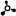
| reader | first thing | second thing | letters |
|---|---|---|---|
| front-end dev | hub with three spokes (network node) | molecule / biohazard-ish | O |
| data scientist | network hub with three nodes | molecule / atom | none (faint "Y") |
| bioinformatician | central atom with three bonds (trigonal) | hub-and-spoke network / share icon | none |
| designer | molecule / network node | hub with three spokes | none |
| conference attendee | network hub / molecule | share icon | none |
| manager | network hub / molecule | radiation sign or fidget spinner | maybe "o" |
Earlier panel, for the marks the blind panel did not see
3B bio: "two links of a chain, or a pair of handcuffs"; analyst: "the male gender symbol, or a figure 8 with a pin sticking out"; front-end: "at 16 px the rings touch and it becomes a figure 8 or handcuffs"; net-sci: "a g, or a figure 8 / chain link with a dot"; designer: "a figure 8 with an antenna"
R2 bio: "the bigger dot makes the male-symbol reading worse"; net-sci: "the most graph-like of the g marks"; designer: "more arrow-like, so the male symbol is stronger"
G3 front-end: "a dashed triangle... like a 'connection lost' icon"; analyst: "a loading or warning icon"
G4 bio: "a ball-and-stick molecule, a methane-like fragment"; front-end: "the kind of stock icon a chemistry vendor would use"
G5 bio: "a capital Y, or a slingshot"; analyst: "a Y, a slingshot, or a git branch icon"; front-end: "reads more as a slingshot than as a y"; net-sci: "a capital Y, or a slingshot"; designer: "a capital Y, a slingshot, or the git fork icon"
bio: "a capital Y, or a slingshot"; analyst: "a Y, a slingshot, or a git branch icon"; front-end: "reads more as a slingshot than as a y"; net-sci: "a capital Y, or a slingshot"; designer: "a capital Y, a slingshot, or the git fork icon"
G6 analyst: "a dancing stick figure"; designer: "a stick figure running, or a molecule"; front-end: "a stick figure doing jumping jacks"; bio: "at 16 px in one color it is a little stick figure waving"
Raw answers: director/panel2/out/ (the image key is in director/panel2/key.json); earlier panel: panel-bio/, panel-analyst/, panel-fe/, panel-netsci/, tmp/panel-designer/.
3. Scores
Score 0 to 4 per criterion; the total is weight x score, out of 400. Marks that fail a gate are shown faded, with their total for reference only.
| Mark | Gates | C1 18 | C2 15 | C3 12 | C4 12 | C5 10 | C6 9 | C7 9 | C8 7 | C9 8 | Total | Why | |
|---|---|---|---|---|---|---|---|---|---|---|---|---|---|
| R1 | pass | 3 | 3 | 3 | 4 | 4 | 2 | 3 | 4 | 4 | 328 | Blind panel: 6 of 6 named connected nodes first, asked about letters, 1 saw a g and 2 an 8 (the letter is a bonus most will not notice). Rings and the middle edge stay apart at 16 px. 3 also said molecule; second readings included git branch (2) and share icon (2); nobody named a logo in the field. Family reads as one set. Color swap only for dark. Says 'graph', not 3D. Ear node is the fragile part on busy slides. Circles and lines only. It is 3B, refined. (blind panel) | |
| R2 | pass (not retested blind) | 3 | 3 | 2 | 4 | 4 | 2 | 3 | 4 | 4 | 316 | Same as R1 with a steeper ear and bigger node. The earlier panel said it makes the male-symbol reading stronger (3 of 5), so distinctness drops a point. (earlier panel) | |
| E4 | pass, but 5 of 6 named the male symbol second | 4 | 3 | 0 | 4 | 4 | 2 | 3 | 4 | 3 | 302 | R1 with a flat, type-style ear at the top. Best letter read in the set: 5 of 6 saw a g. But the flat ear made the male symbol the second reading for 5 of 6. Rejected as a fix. (blind panel) | |
| E1 | pass, but 5 of 6 named a key second | 3 | 3 | 1 | 4 | 4 | 2 | 3 | 4 | 3 | 296 | Ear straight out of the middle of the ring: reads as a key. Rejected. (blind panel) | |
| G1 | pass | 3 | 4 | 0 | 3 | 4 | 2 | 4 | 4 | 3 | 296 | 6 of 6 named a triangle network first, but 5 of 6 named the share icon second. Boldest triangle at 16 px. Family works, though the axes child reads as a chart library. Square, fits every avatar. (blind panel) | |
| E3 | pass, but 6 of 6 named the male symbol second | 3 | 3 | 0 | 4 | 4 | 2 | 3 | 4 | 3 | 284 | Flat ear a little lower. Every panelist named the male symbol as the second reading. Rejected. (blind panel) | |
| G4 | pass (molecule ruled graph-shaped) | 3 | 3 | 0 | 2 | 3 | 2 | 4 | 4 | 1 | 243 | Every panelist named a ball-and-stick molecule. That is a graph drawing, so not a gate fail, but it is the stock icon of the field. (earlier panel) | |
| G2 | pass | 3 | 2 | 0 | 2 | 3 | 2 | 3 | 4 | 3 | 235 | Triangle network first for 6 of 6; share icon second for 5 of 6. The ring node is a 2 px donut at 16 px. No family built. (blind panel) | |
| G7 | pass | 3 | 2 | 1 | 2 | 3 | 2 | 3 | 4 | 1 | 231 | Network hub first; molecule, fidget spinner, radiation or biohazard second. The ring nearly closes at 16 px. (blind panel) | |
| G5 | FAIL G1 (Y or slingshot, 5 of 5) | 3 | 4 | 2 | 3 | 4 | 2 | 4 | 4 | 1 | 304 | Boldest at 16 px; nobody saw a lowercase y. (earlier panel) | |
| 3B | FAIL G2 (rings merge at 16 px); figure 8 named by 3 | 3 | 1 | 3 | 4 | 3 | 2 | 3 | 4 | 4 | 288 | The owner's favorite as drawn. The gap between the rings is 0.4 px at 16 px, so they fuse into an 8 and the edge between them is lost. R1 is the fix. (earlier panel) | |
| G3 | FAIL G2 (gaps close at 16 px) | 3 | 1 | 2 | 2 | 2 | 2 | 3 | 4 | 1 | 218 | Its one idea, the floating edges, is what disappears at 16 px. (earlier panel) | |
| G6 | FAIL G1 (stick figure, 4 of 5) | 2 | 2 | 0 | 2 | 3 | 2 | 3 | 4 | 1 | 201 | A molecule large, a stick figure small. (earlier panel) |
R2 scores second, but it is R1 with a bigger dot, not an alternative, and the earlier panel says it pushes toward the male symbol. E4 and E3 are rejected fixes. So the runner-up kit is G1, the best mark that is not a g. G1 and R1 are 32 points apart, so the tie-break (criteria 1 + 2) is not needed.
Not run: the field comparison grid for criterion 3 (the candidate among Cytoscape, Neo4j and other logos) and the 3-second favicon strip for criterion 2. Those scores come from the readers' answers and the real 16 px renders.
4. Winner kit: R1

The mark
R1 is 3B with rings 6 units wide instead of 7, both rings half a unit smaller and the lower ring moved down and left. The gap between the rings grows from 1.7 to 6 units out of 64, so at 16 px you still see two rings and the edge between them. Everything else, including the 22 degree ear, is 3B. Files: director/winner/ (every palette, one color and dark).
Palette: graphite + magenta (P2)
Why this one of your three: magenta is the only accent that passes as text on white at the same color as the node (4.4:1 for the node, 4.5:1 as text), so the brand has one accent, not two. Lime and amber are 3.0:1 on white, so text needs a darker olive or brown. Graphite also keeps the rings neutral, so the colored node is the only thing that says "graphty" at a glance. The other two palettes are shown below and work too; this is a two-way choice.
P1 ink + lime
light: ring / ink #2a3045 13.1:1 · accent node #75a300 3.0:1, graphics only · accent as text #588300 4.5:1 · wordmark #14161f
dark, on #111318: ring / ink #9aa3b8 7.4:1 · accent #c4f23a 14.3:1 · wordmark #f2f3f7
P2 graphite + magenta (recommended)
light: ring / ink #2e323c 12.8:1 · accent node #e0306f 4.4:1 · accent as text #dd2c6d 4.5:1 · wordmark #1c1d22
dark, on #111318: ring / ink #d0d4dc 12.5:1 · accent #ec3f7e 4.9:1 · wordmark #f2f2f4
P3 indigo + amber
light: ring / ink #4f46e5 6.3:1 · accent node #d48200 3.0:1, graphics only · accent as text #b36200 4.5:1 · wordmark #1b1b2b
dark, on #111318: ring / ink #8b93fa 6.8:1 · accent #ffb81f 10.7:1 · wordmark #f2f2f7
Wordmark: Outfit 500 (SIL OFL 1.1)
One of your three fonts. Its round, even strokes match the mark's rings. The word keeps Outfit's plain g, so the mark is the only looping g in the lockup: two looping g's side by side read as "gg" (the front-end reader's note, and visible in V12). If you want the echo, Outfit's stylistic set 1 swaps in a looping g with no other change; compare V9 (plain) and V12 (looping) below. The package name is set in Outfit 400.


Every lockup
P1 ink + lime
P2 graphite + magenta
P3 indigo + amber
The family at 64 and 16 px
| package | p1 | p1-dark | p2 | p2-dark | p3 | p3-dark | mono | mono-dark | 16 px, all | 16 px enlarged (p2, p2-dark, mono) |
|---|---|---|---|---|---|---|---|---|---|---|
| graphty | 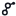 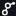 |
|||||||||
| app | ||||||||||
| graphty-element | 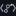 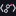 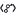 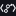 |
|||||||||
| layout (L7) | |
|||||||||
| algorithms (A7) | 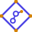 |
|
||||||||
| webgpu-graph-algorithms |  |
|||||||||
| graph-io |  |
|||||||||
| graph-format |  |
|||||||||
| graph-samples (S1) | ||||||||||
| cytoscape-extensions (C1) | 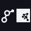 |
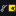 |
|
Craft fixes made to the winner's files:
- The child family was drawn on 3B, whose rings fuse at 16 px. It is rebuilt on R1 (
director/family-R1/, runnode tools/build.mjsthenFC_FONTATIONS=1 node tools/render.mjs). - Algorithms was A4 (part of the g in accent). In one color and at 16 px it was identical to the plain graphty mark, as two readers noted. It is now A7, the flowchart diamond: a frame like its siblings, with a shape that survives at 16 px and in one color.
- The webgpu-graph-algorithms chip carried the A4 g; it now carries the plain g, so it does not depend on the algorithms choice.
- Lockups moved from Figtree to Outfit 500 / 400, cut as static instances from the variable font (
fonts/Outfit-wght-500.ttf,-400.ttf) and converted to outlines. - The ear fix the earlier panel asked for (a flatter ear, E1 to E5) was built and tested blind; it made the male-symbol reading worse, so the ear is unchanged.
Full sheets for the winner's family: family, layout, algorithms, graph-samples, co-brand. The Cytoscape.js logo in C1 is their file, used as a placeholder; shipping it needs the Cytoscape maintainers' permission.


5. Runner-up kit: G1
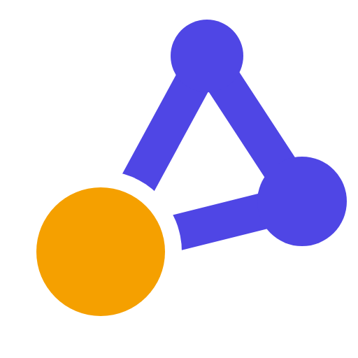
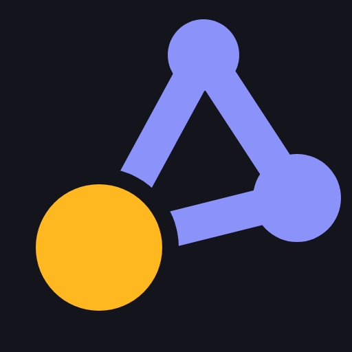

Mark: G1, your 3G triangle with bigger nodes and heavier edges. The cleanest 16 px read of anything here. Its problem: 5 of 6 blind readers named the share icon as their second reading, and the bioinformatician called it "exactly what every pathway icon looks like". It is a safe mark that few will remember.
Palette: indigo + amber (P3), the one that gives a triangle the most character; amber is close to the Cytoscape.js yellow, so the co-brand would need care. Wordmark: Figtree 600, the plainest of your three; with no letter in the mark there is no g to echo. Family: the same locked children around the triangle, layout L2 (axes) and algorithms A2 (function call, round brackets).
Lockup preview set live in Figtree 600 from fonts/Figtree-wght-600.ttf:
| package | P1 | P2 | P3 | P3 dark | one color | 16 px |
|---|---|---|---|---|---|---|
| graphty |  |  | ||||
| graphty-element | ||||||
| layout (L2 axes) | ||||||
| algorithms (A2 call) | 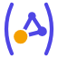 | 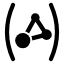 | ||||
| webgpu-graph-algorithms | ||||||
| graph-io | ||||||
| graph-format | ||||||
| graph-samples |
More: graph-marks/index.html.
6. R1 lockups: palette x font (V1 to V18)
R1 with each of your three palettes and six fonts. Source Sans 3, DM Sans and Outfit with its alternate g are the looping-g options. Every wordmark is the real font converted to outlines. All fonts are SIL OFL 1.1.
On white
| Figtree 600 | Onest 600 | Outfit 500 | Source Sans 3 600 | DM Sans 600 | Outfit 500, ss01 g | |
|---|---|---|---|---|---|---|
| Ink + lime | V1 |
V2 |
V3 |
V4 |
V5 |
V6 |
| Graphite + magenta | V7 |
V8 |
V9 |
V10 |
V11 |
V12 |
| Indigo + amber | V13 |
V14 |
V15 |
V16 |
V17 |
V18 |
On near-black
| Figtree 600 | Onest 600 | Outfit 500 | Source Sans 3 600 | DM Sans 600 | Outfit 500, ss01 g | |
|---|---|---|---|---|---|---|
| Ink + lime | V1 |
V2 |
V3 |
V4 |
V5 |
V6 |
| Graphite + magenta | V7 |
V8 |
V9 |
V10 |
V11 |
V12 |
| Indigo + amber | V13 |
V14 |
V15 |
V16 |
V17 |
V18 |
The rest of that sheet, with 3B, R1 and R2 side by side in every palette: 3B-variations/sheet.html.
7. Font research: a looping g with plain letters
About 95 open-licensed families were checked, including every OpenType alternate that changes the g. The answer to your question is inside a font you already like: Outfit with stylistic set 1 swaps its plain g for a looping g with a diagonal ear and two near-round rings, the closest match to the mark of any font found, and leaves every other letter as it was.
- Outfit, stylistic set 1: looping g, geometric, one of your three.
- DM Sans: looping g by default; its diagonal neck repeats the mark's zigzag. Flat ear, flatter loop.
- Lexend, stylistic set 1: open round loop, very easy to read small.
- Lexend Exa, stylistic set 1: the retro / art-deco option, from wide letters and wide spacing, not decoration.
- Syne, stylistic set 4: more deco, with eccentric a and t; more character, more risk of costume.
- Geologica: looping g by default, clean geometric.
- Source Sans 3: humanist; its g is tilted and narrower than the mark's rings.
- Hanken Grotesk: looping g with a diagonal ear, but upright and narrow.
Figtree has no looping-g alternate. Onest's alternate g is still single-story. All eight are SIL OFL 1.1.
The director's call: keep the word's g plain (Outfit default) and let the mark be the looping g. If you want the echo, it is one switch in the same font (V6, V12, V18).
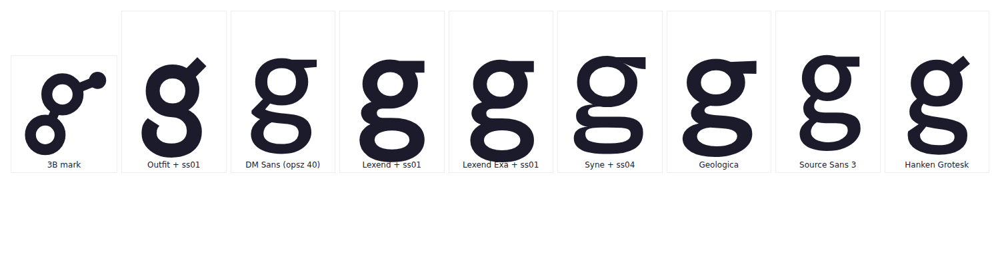
Full sheet: fonts-research/index.html; every g: g-glyphs-all.png.

8. All the options, by label
Layout (L1 to L7)
| option | p2 | p2 dark | p1 | p3 | one color | 16 px | |
|---|---|---|---|---|---|---|---|
| L1Circle snap | A circular layout: all three nodes sit on one orbit, drawn as a thin accent ring through their centres. The g is unchanged, only scaled to fit the ring. | ||||||
| L2Grid snap | 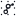 | A grid layout: the g sits on a 3 x 3 dot grid, the guide points a grid layout snaps nodes to. | |||||
| L3Spring | 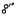 | A force-directed layout: the ear edge is a spring, pushed out to its rest length. The ear node moves out along its own direction; nothing else changes. | |||||
| L4Settling | A layout settling: the ear node has just slid into place, with two motion strokes trailing behind it. Risk: speed lines can read as a comet. | ||||||
| L5Radial rings | 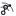 | A radial layout: the loop node is the root and the other nodes sit on rings around it, one ring per hop (bowl on the first, the ear on the second). | |||||
| L6Axes (round 3) | 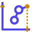 | 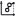 | Kept from round 3: the g on x/y axes, accent ticks on both axes marking the ear node's coordinates, a guide dropped to the x axis. | ||||
| L7Transform handles (pick) | Arranging, as in a drawing tool: the g inside a selection box with four accent corner handles, the frame you drag to move and resize a layout. |
Algorithms (A1 to A8)
| option | p2 | p2 dark | p1 | p3 | one color | 16 px | |
|---|---|---|---|---|---|---|---|
| A7Flowchart diamond (pick) | 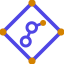 | | The flowchart decision diamond, the oldest picture of an algorithm, as a frame around the g, like the brackets, chip, page and cards of the other children. Its four corners are accent nodes, so the frame is itself a small graph. | ||||
| A8Function call f( ) | 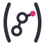 | 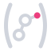 | 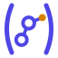 | Round brackets, as in calling a function on the graph: f(g). Pairs with the angle brackets of graphty-element; risk: close to graph-format's square brackets at 16 px. | |||
| A1Shortest path traced | The route an algorithm found is traced over the g like a route on a map: a thin accent line from the ear node through the centre of the bowl to the centre of the loop, with a stop at each node. | ||||||
| A2Ranking by weight | An algorithm scores every node and the g draws each node by its score: the bowl heaviest, the loop lightest, the ear node larger. Same rings, same places; only weights change. | ||||||
| A3Centrality hub | The most central node is marked: the bowl, which joins the other two, gets an accent halo, broken where its two edges leave. Everything else is the plain g. | ||||||
| A4Community split | 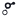 | A community detection result: the top cluster (ear and bowl) in accent, the loop in its own color, and the edge between the two clusters cut. One color: the loop drops to a thin line. | |||||
| A5Traversal order | 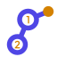 | A breadth-first walk from the accent ear node: the bowl is visited 1st and the loop 2nd, the numbers written in the rings. Expected to fail at 16 px, where the digits close up. | |||||
| A6Flow arrows | 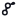 | A flow or a directed walk: both edges carry an accent arrowhead, ear to bowl to loop. The arrows sit on the edges, so the g does not move. |
graph-samples (S1 to S4)
| option | p2 | p2 dark | p1 | p3 | one color | 16 px | |
|---|---|---|---|---|---|---|---|
| S1Offset deck (pick) | Round 3's cards, heavier: the g on the front card, the top and right edges of two cards behind it, all at full weight. | ||||||
| S2Fanned hand | A hand of cards fanned out: you pick one ready-made graph from many. The g is on the front card; two cards fan out behind it. | ||||||
| S3Deck, other graphs peek | The offset deck, but each card behind shows the corner of its own graph, an accent node: every card is a different sample. | ||||||
| S4Playing card | One playing card with the g as its face and accent nodes as the corner pips: a sample you deal out, ready to play with. |
Cytoscape co-brand (C1, C2)
| option | p2 | p2 dark | p1 | p3 | one color | 16 px | |
|---|---|---|---|---|---|---|---|
| C1Logos, then the name (pick) | 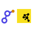 | As asked: the graphty g and the Cytoscape.js logo side by side at the same height, then 'graphty cytoscape-extensions' in the family's lockup style. | |||||
| C2Logos with a rule | 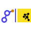 | The same, with a thin rule between the two logos so they read as two brands side by side rather than one shape. |
Why L7 and A7: both are frames, like the brackets, chip, page and cards, so the family reads as one set; both keep their shape at 16 px and in one color. L7's runner-up is L3 (spring); A7's runner-up is A8 (round brackets), which risks being confused with graph-format's square brackets at small sizes.
Ear fixes tried on R1 (E1 to E5)
Built to answer the earlier panel's male-symbol worry, by making the ear leave the ring flat like a type designer's g. The blind panel read E3 and E4 as the male symbol more often, not less, so none is used.
Graph marks (G1 to G7)
The triangle (3G) redrawn three ways and the four-node hub you missed, brought back four ways.
| mark | P1 | P2 | P3 | P3 dark | one color | 16 px | what it is |
|---|---|---|---|---|---|---|---|
| G1 |  |  | | 3G, heavier | |||
| G2 |  | | 3G, selected node (ring) | ||||
| G3 | 3G, floating edges | ||||||
| G4 | Hub and three, uneven | ||||||
| G5 |  |  | Hub and three, bent into a y | ||||
| G6 | Hub and three, depth by node size | ||||||
| G7 | Hub and three, selected hub (ring) |
What is left for you
- Lock R1 as the mark, or tell me what about it is wrong.
- Palette: graphite + magenta (recommended), ink + lime or indigo + amber.
- Wordmark g: Outfit's plain g (V9) or its looping g (V12).
- Layout L7 and algorithms A7, or another label from section 8.
- Whether to ask the Cytoscape maintainers for permission to use their logo in the co-brand.